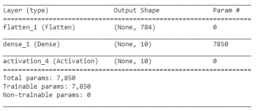
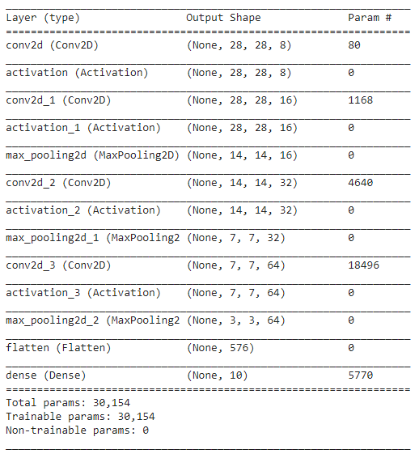

During the Deep Learning for Visual Recognition course at Aarhus Universe I was inspired to experiment with the MNIST dataset and to try and use the Github Pages system for hosting a webapp to show, test and compare the different models.
This project is heavily inspired by my course lecturer Henrik Pedersen similar project. As mentioned on his project page he was further inspired by Zaid Alyfeai.
It's possible to try drawing your own digit in the square either to the right or in the bottom of the page depending on the window size and view the predictions of the different models. The models have different strength and weaknesses depending on where in square you draw, the brush size used and the size of the digit. An experiment for the reader could be to try and figure out how the different models works before reading the models section which describes the models architectures.
| Label | Basic | Regularization | CNN | CNN AUGM |
|---|---|---|---|---|
| 0 | ||||
| 1 | ||||
| 2 | ||||
| 3 | ||||
| 4 | ||||
| 5 | ||||
| 6 | ||||
| 7 | ||||
| 8 | ||||
| 9 |
During the course we did experiment with the MNIST dataset in the exercises and the models I'd named Basic and Regularization was showed in these exercises. They use the same Fully Connected architecture but the Regularization one segregate by using the L2-regularization technique. We can easily visualize the effect of this by plotting their weights.
As can be seen the first model have a lot of noisy weights since it has not seen any data in those regions. This means that we cannot know how the model will react if it sees data in those regions.
In the model using regularization however we penalize the weights that doesn't have an impact by making them less important.
Both the models use the Cross-Entropy Loss Function with Stochastic Gradient Descent (SGD) using a earning rate of 0.1. This result in an accuracy of 90% for 10 epochs taking less than a minute on Google Colab (using GPU). The regularization model uses a L2-lambda of 0.005.
The architecture is basically to flatten the input image and then dense to the 10 classes.
Instead of having a fully connect network we in this model uses a convolutional neural network. The architecture is much more complex than the basic and regularization. It uses a combination of convolution and max-pooling layers. The summary looks like this:
Training this model also takes less than a minute with GPU on Google Colab and achieves an accuracy of 99%.
This model uses the same model as the first CNN, but it has its own ImageDataGenerator for making augmentations to the pictures. A problem in the above models is that they are very dependent of the rotation and the size of the digits drawn. Using this ImageDataGenerator we can transform the training samples into being smaller or larger, being rotated and/or move their position in the image and a lot more. I have been using the following augmentation settings:
This model didn't seem to learn anything when using the SGD optimizer. It might have been due to being stuck in a local minima or saddle point. After switching to RMSprop with learning_rate=0.0001 and decay=1e-6 it started to improve. These might not be the ideal parameters, they are simply the first I tried. In order to get above 90% accuracy, it had to train for a lot longer than the previous models. The model is trained for 40 epochs using a batch size of 64, which took about 30 minutes using Google Colab. This resulted in an accuracy of ~92% but a validation accuracy of ~95%.